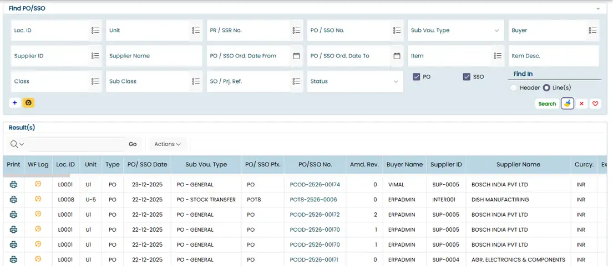

<div data-category="Operating Instructions" data-title="Clear" data-updated="December 01, 2025" data-contributors="RoadmapIT" data-breadcrumb="Home,Operating Instructions,Clear">
  <div class="page-content">
    <p>This is used to clear the record of current block. It is used to clear all the text fields at a time.</p>
    <!-- Clear Data -->
    <h2>Clear</h2>
    <ul style="list-style-type: none; align-content: center">
      <li class="mouse-icon">
        Click on the clear icon .
      </li>
    </ul>
    
  </div>
</div>